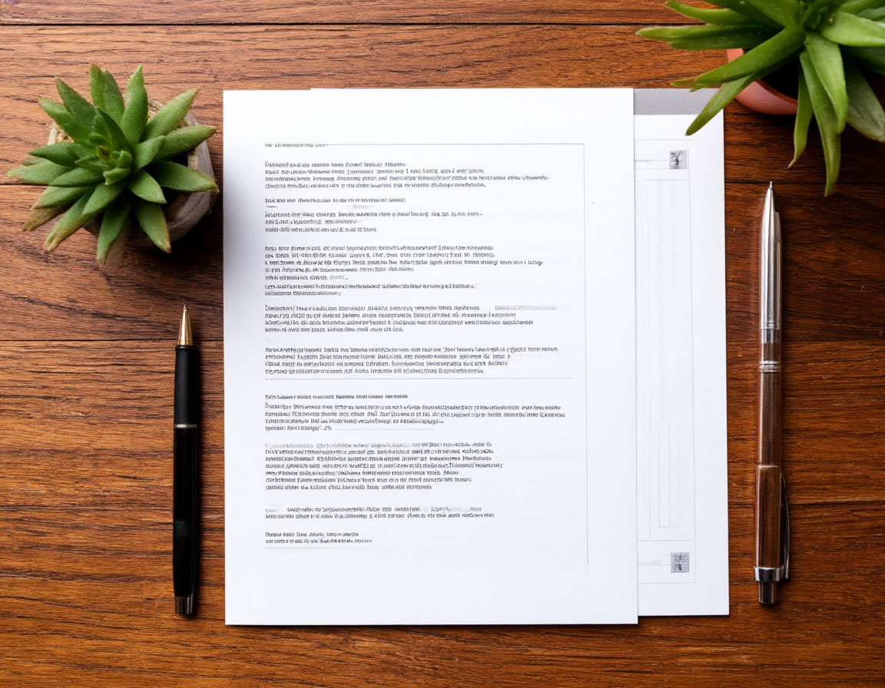

Документы и правовая информация
В соответствии с требованиями законодательства Российской Федерации: Федеральный закон от 21.11.2011 № 323-ФЗ «Об основах охраны здоровья граждан», Федеральный закон от 27.07.2006 № 152-ФЗ «О персональных данных», Федеральный закон от 02.05.2006 № 59-ФЗ «О порядке рассмотрения обращений граждан».
Лицензия на осуществление медицинской деятельности
С приложениями, содержащими перечень разрешённых видов работ (услуг). Документ заверен электронной подписью.
Скачать лицензию с приложениями (PDF, 2.4 МБ)Виды медицинской деятельности (выписка из приложения к лицензии)
- Анестезиология и реаниматология
- Кардиология
- Клиническая лабораторная диагностика
- Лучевая диагностика (рентгенология, КТ, МРТ)
- Неврология
- Нейрохирургия
- Организация здравоохранения
- Оториноларингология
- Психиатрия
- Рентгенэндоваскулярная диагностика и лечение
- Стоматология хирургическая
- Терапия
- Травматология и ортопедия
- Ультразвуковая диагностика
- Функциональная диагностика
- Хирургия (в т.ч. гнойная)
- Челюстно-лицевая хирургия
Устав учреждения

Политика в отношении обработки персональных данных
Настоящая Политика разработана в соответствии с требованиями Федерального закона от 27.07.2006 № 152-ФЗ «О персональных данных» и определяет порядок обработки персональных данных и меры по обеспечению их безопасности.
Основные положения
- Обработка персональных данных осуществляется на законной и справедливой основе.
- Персональные данные обрабатываются только с согласия субъекта.
- Хранение персональных данных граждан РФ осуществляется исключительно на серверах, расположенных на территории РФ.
Порядок рассмотрения обращений граждан
Рассмотрение обращений граждан осуществляется в соответствии с Федеральным законом от 02.05.2006 № 59-ФЗ «О порядке рассмотрения обращений граждан Российской Федерации».
Способы подачи обращения
- Письменно — 105229, г. Москва, Госпитальная пл., д. 3, каб. 105.
- Электронно — через форму обратной связи на официальном сайте.
- Лично — на приёме у должностных лиц в установленные часы.
- По телефону горячей линии — +7 (495) 111-22-33.
Сроки рассмотрения
Общий срок — 30 календарных дней со дня регистрации. В исключительных случаях — продление до 30 дней с уведомлением заявителя.
Перейти к контактам для обращенийСведения о медицинских работниках
В соответствии с Приказом Минздрава России от 30.12.2014 № 956н.
| ФИО | Должность | Образование | Специальность | Квалификация |
|---|---|---|---|---|
| Иванов Сергей Петрович | Начальник филиала | Военно-медицинская академия, 1998 | Организация здравоохранения | Высшая / д.м.н., профессор |
| Петрова Елена Викторовна | Зам. начальника по мед. части | РНИМУ им. Н.И. Пирогова, 2003 | Хирургия | Высшая / к.м.н. |
| Громов Алексей Вадимович | Зав. хирургическим отделением | ВМедА им. Кирова, 1995 | Хирургия | Высшая / д.м.н., профессор |
Полный реестр доступен для скачивания.
Скачать полный реестр (XLSX, 0.3 МБ)Результаты проверок контролирующих органов
Плановая выездная проверка Росздравнадзора
Акт № 77-2025-045 от 15.11.2025Предмет: соблюдение лицензионных требований.
Скачать акт (PDF, 1.2 МБ)Результат: нарушений не выявлено.
Внеплановая проверка Роспотребнадзора
Акт № 77-2025-089 от 03.09.2025Предмет: санитарно-эпидемиологические требования.
Скачать акт (PDF, 0.9 МБ)Результат: выявлено 1 нарушение (устранено).
Скачать отчёт (PDF, 0.4 МБ)Информация об объёмах медицинской помощи
Медицинская помощь оказывается в рамках государственного задания Минобороны, ОМС, ДМС и на платной основе.
Стационарная помощь
Коечный фонд: 450 коек
Госпитализаций: 12 500 в год
Амбулаторная помощь
Посещений в смену: 250
Посещений в год: 55 000
Высокотехнологичная помощь
Квот в год: 800
Независимая оценка качества
В соответствии с Федеральным законом от 21.07.2014 № 256-ФЗ проводится анкетирование пациентов. Анкета анонимна.
Пройти анкетирование НОК